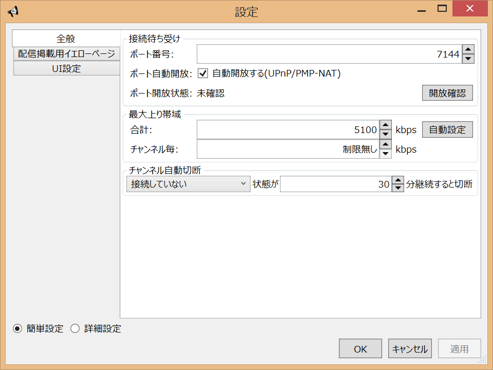
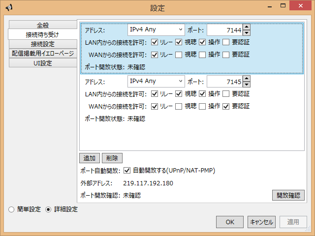
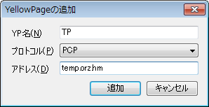

設定方法
設定 - GUI編
GUIの設定タブで各種設定を編集することができます。

接続待ち受けポート
ポート一覧には現在接続待ち受けをしているポートが表示されます。
追加を押すと待ち受けをしているポートを追加することができます。

| アドレス | 接続待ち受けをするアドレスを指定します。通常IPv4 Anyのままで大丈夫です。特定のインターフェースでのみ待ち受けをする場合はアドレスを指定してください。IPv6アドレスも指定できますが現状では無意味です。 |
| ポート | 追加する接続待ち受けポート番号を指定します。 |
| LAN内からの接続を許可 | このポートにLAN内から接続された時に許可する操作を指定します。 リレーはリレー接続の受け付けを許可、視聴は直接視聴接続の受け付けを許可、操作はHTML UIへの接続など操作系への受け付けを許可します。要認証を有効にすると操作と視聴のアクセスがされた場合にIDとパスワードの入力を要求します。通常は要証以外全部ONで大丈夫です。 |
| WANからの接続を許可 | このポートに外部ネットワークから接続された時に許可する操作を指定します。 リレーはリレー接続の受け付けを許可、視聴は直接視聴接続の受け付けを許可、操作はHTML UIへの接続など操作系への受け付けを許可します。通常はリレーのみONにしておいてください。要認証を有効にすると操作と視聴のアクセスがされた場合にIDとパスワードの入力を要求します。操作や視聴をONにする場合は要認証もONにすることをおすすめします。 |
| 認証ID・認証パスワード | 要認証をONの状態でHTML UIへのアクセスや視聴をしようとした際に求められるIDとパスワードを表します。安全のため自動生成のみになっています。再生成ボタンを押すとIDとパスワードを生成しなおします。 |
追加ボタンを押すと指定したポートがリストに追加されます。接続待ち受けが開始できなかった場合はリストへの追加が行われません。既に別なアプリケーションが指定したポートで接続待ち受けをしている可能性があるので、そのアプリケーションを終了後に再度追加してください。
既に接続待ち受けをしているポートを選択すると、下のチェックボックスで接続許可設定を変更することが可能です。通常変更することはありません。
接続数設定
最大接続数などの設定を変更することができます。
- 最大リレー数(合計)
- PeerCastStation全体で許可する最大リレー数を指定します。0を設定すると制限無しになります。0でも問題ありません。
- 最大リレー数(チャンネル毎)
- チャンネル毎に許可する最大リレー数を指定します。0を設定すると制限無しになります。0でも問題ありませんが特定のチャンネルでリレーが埋まるのを回避したい場合は適当な数を指定しておいてください。
- 最大視聴数(合計)
- PeerCastStation全体で許可する最大直接視聴数を指定します。0を設定すると制限無しになります。通常、視聴はLAN内のみなので0で全く問題ありません。
- 最大視聴数(チャンネル毎)
- チャンネル毎に許可する最大直接視聴数を指定します。0を設定すると制限無しになります。通常、視聴はLAN内のみなので0で全く問題ありません。
- 最大上り帯域(合計)
- 同時にリレーできるチャンネルのビットレート合計を設定します。回線の上り速度計測をして出た値の70～80%程度を指定してください(kbps単位)。ここの値はリレーにとても影響が大きいので正しく設定してください。0は制限無しではなく0kbpsとして扱われるので注意してください。
- 最大上り帯域(チャンネル毎)
- チャンネル毎のリレーできるビットレート合計を設定します。0は制限無しですが、この場合も最大上り帯域(合計)での制限がつきます。基本的には0を指定してかまいませんが、複数チャンネルをリレーする際に1つのチャンネルで帯域が埋まると困る場合はこの項目で1チャンネルに割り当てる最大帯域を指定してください。
- チャンネル自動切断
- 一定時間特定の状態にあるチャンネルを自動切断します。次のいずれかを選択してください。
自動切断しない 自動切断をしません 接続していないチャンネル 設定した時間の間ERRORやIDLEの状態(接続されていない状態)にあるチャンネルをチャンネル一覧から自動的に削除します リレー・視聴していないチャンネル 設定した時間の間リレーも視聴もされていないチャンネルをチャンネル一覧から自動的に削除します 視聴していないチャンネル 設定した時間の間視聴もされていないチャンネルをチャンネル一覧から自動的に削除します。リレーが行われていても自分で視聴していない限り切断してします - チャンネル自動切断までの時間(分)
- チャンネル自動切断で指定した自動切断が発生するまでの時間を分単位で指定します。0を指定すると自動切断は行いません。
設定を変更した場合は適用ボタンを押してください。
YP設定
配信を掲載するYPを設定します。追加ボタンを押すとYP追加ウィンドウが出ます。

| YP名 | YPの表示名を指定します。表示に使うだけの名前なのでなんでもいいですが、わかりやすい物にしておきましょう。 |
| プロトコル | YPへの掲載プロトコルを指定します。今のところPCPしか無いのでPCPを選択してください。 |
| アドレス | YPのホスト名を指定します。http://～/のようなブラウザで見るためのアドレスとは異なるので注意してください。基本的にはホスト名だけ指定すれば大丈夫ですが、YPによってはホスト名:ポート番号の形式で指定する必要があります。各YPの掲載方法の情報を確認してください。 |
追加ボタンを押すとYP一覧に設定したYPが追加されます。追加ボタンを押しても何も起きない場合は設定に不備があります。たいていはアドレスの部分の形式が上手くいってないので「ホスト名」または「ホスト名:ポート番号」の形式で入力するようにしてください。
リストでYPを選択して削除ボタンを押すと削除できます。設定変更はできないので、変更する場合は一旦削除してから再度追加してください。
UI設定
起動時にウィンドウを表示するのチェックを入れておくと、起動時にGUIが表示されます。既定値はこの状態です。
チェックを外すと起動時にはウィンドウの表示がされません。ステータスアイコンのダブルクリックか右クリックメニューからGUIを表示を選んだ時に初めて表示されるようになります。
設定 - HTML UI編
ナビゲーションの設定リンクから各種設定のページを開きます。

それぞれの設定方法はGUI編とだいたい同じなので上を見てください。